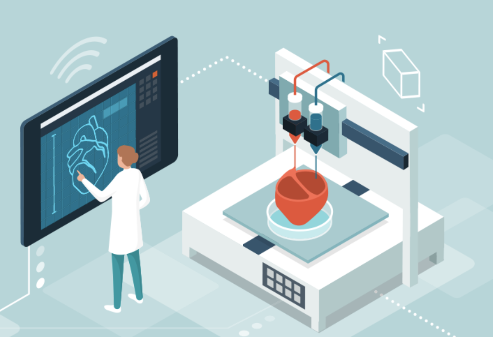

Additive manufacturing material adoption
Additive Manufacturing (AM), or 3D Printing, is a crucial process to unlock future manufacturing providing a way to create items that are customized, light-weight, energy efficient, or have other benefits. Materials designed for the additive process are being developed and will enable widespread adoption in everything from consumer goods to advanced energy generation, healthcare, transportation, and sustainability.
High-performance thermoplastics, like carbon-reinforced composites, ULTEM, PEEK and PEKK are contributing to AM advances. So too are polymers that are soft and flexible and also tough and strong, like TPU and silicone. On the metals side, materials with high corrosion resistance and high thermal and electrical conductivity are being developed. Non-traditional AM materials, like concrete and organic materials, are also making great strides forward. We’re starting to see the military testing concrete AM in the field and commercial companies printing the walls of houses.
With these innovations, one day we may be able to print a replacement heart.
Credit: FDA.gov